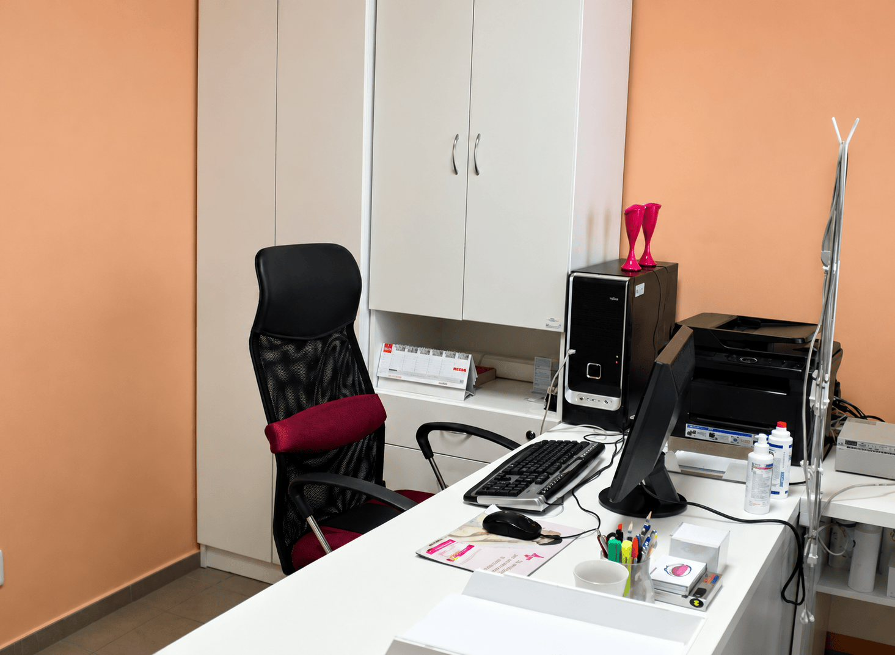
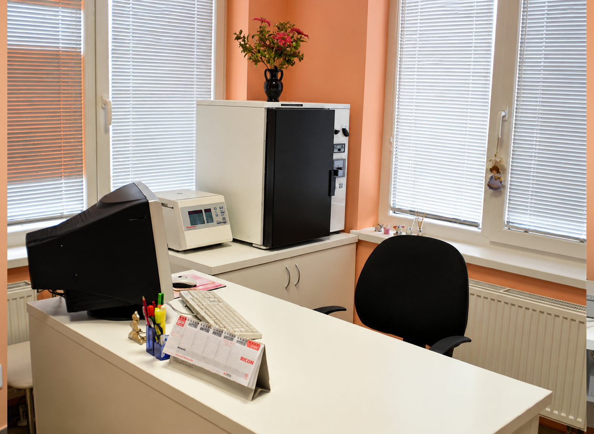
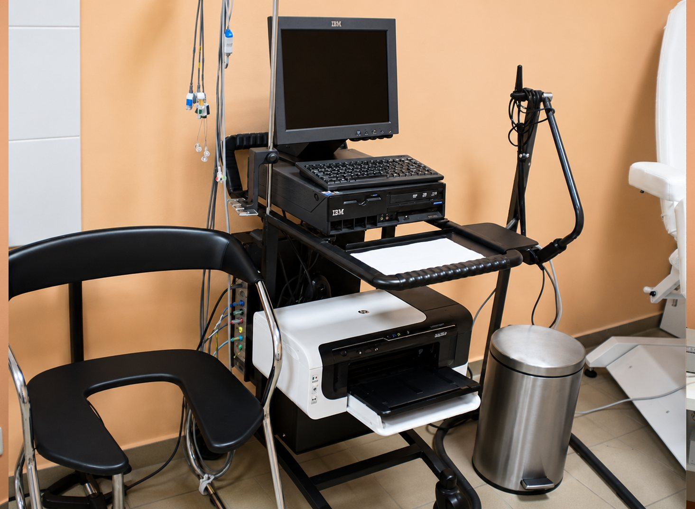
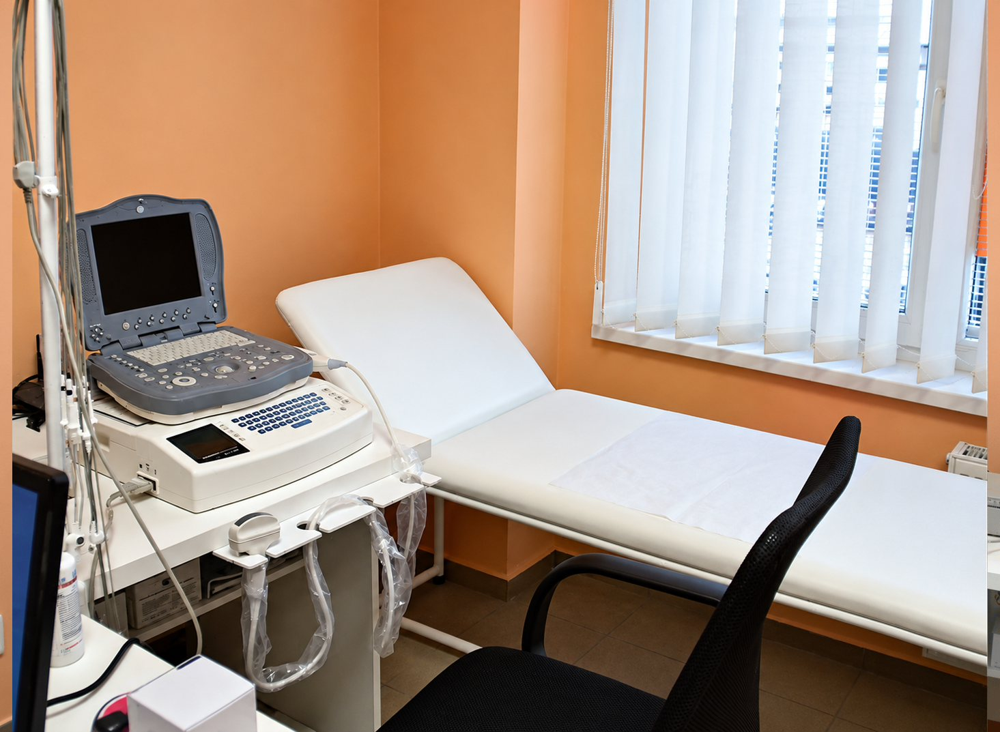
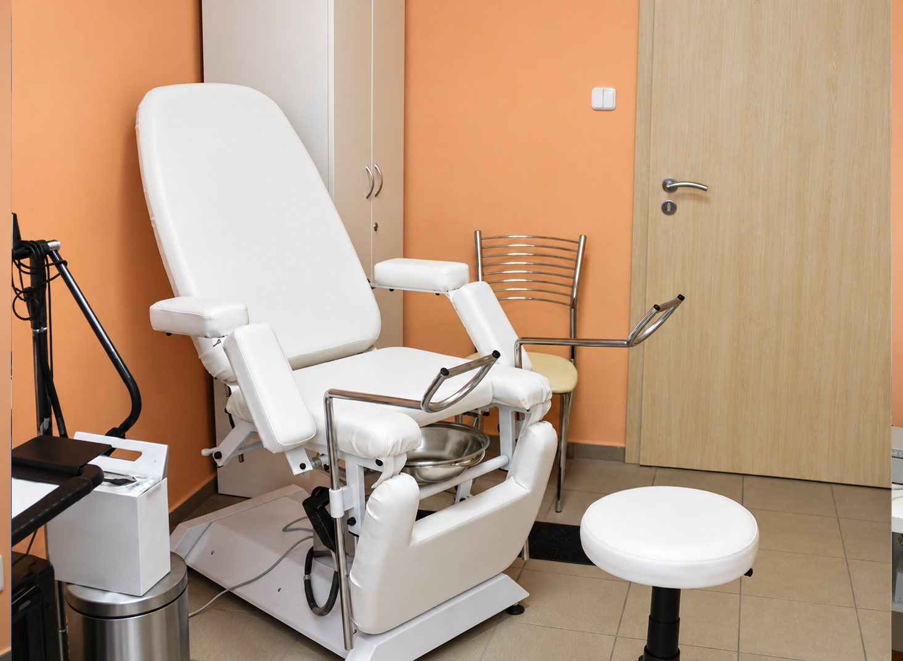
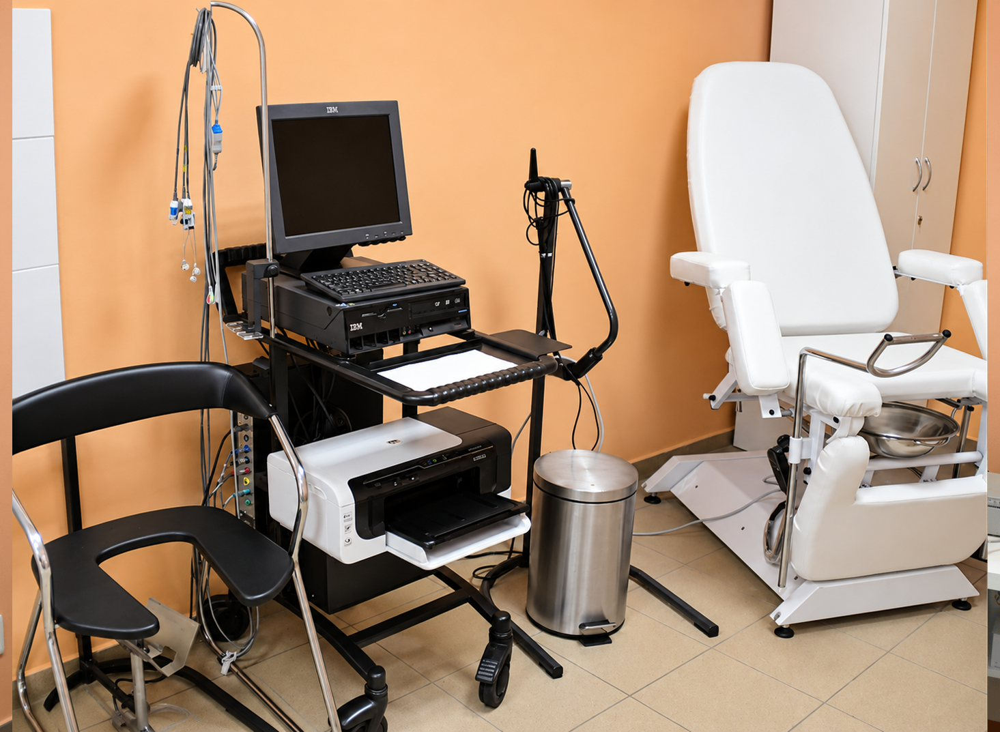

MUDr. Peter Brenišin a sestra Valéria Maličká sa o vás postarajú diskrétne, s pochopením a s dlhoročnými skúsenosťami.
Drevárska 1, AC TATRA · cca 100 m od autobusovej stanice smerom do centraStarostlivosť o ženy v každom období života, od preventívnej prehliadky cez tehotenstvo až po menopauzu.
Šetrné preventívne prehliadky, moderný ultrazvuk a komplexný skríning pre ženy v každom veku.
Bezpečné vedenie tehotenstva, detailné ultrazvukové kontroly a citlivá starostlivosť v každom trimestri.
Presná diagnostika a moderná liečba samovoľného úniku moču či častého nutkania bez zbytočného čakania.
Dlhodobá prevencia a cielená liečba opakovaných infekcií močového mechúra bez neustáleho užívania antibiotík.
Prísť s intímnym problémom chce odvahu. Všetko vám vopred vysvetlíme.
Spýtame sa na ťažkosti a na to, čo vás najviac obmedzuje.
Šetrné gynekologické vyšetrenie, podľa potreby ultrazvuk.
Povieme vám, čo sa deje, zrozumiteľne a bez latinčiny.
Spoločne vyberieme liečbu. Výsledky vám pošleme e-mailom.
Sme tu pre vás v prípade akýchkoľvek zdravotných komplikácií. Naším hlavným cieľom je vaša spokojnosť a pevné zdravie. V rámci ordinačných hodín nás môžete navštíviť v dvoch špecializovaných ambulanciách:
Zdravotná sestra: Valéria Maličká
Počas ordinačných hodín sa venujeme pacientkam v ambulancii, preto telefón nie vždy zdvihneme. E-mail je rýchlejší.
Vyšetrenia hradené poisťovňou sú bezplatné. Za výhodnú cenu ponúkame aj:
Príjemné priestory vytvorené tak, aby ste sa počas celej návštevy cítili pohodlne a bezpečne.






Nemusíte mať žiadne obavy, vyšetrenie je nebolestivé a prebieha veľmi citlivo. Začína sa pokojným rozhovorom o vašich ťažkostiach (či už ide o únik moču pri kašli, športe, alebo náhle silné nutkanie). Nasleduje šetrné gynekologické vyšetrenie a neinvazívny ultrazvuk močového mechúra cez podbruško. Všetko vám vopred vysvetlíme a spoločne navrhneme riešenie.
Ideálny čas je v prvej polovici menštruačného cyklu, približne niekoľko dní po úplnom skončení menštruácie (medzi 8. až 14. dňom cyklu). V tomto období je cytologický ster z krčka maternice najpresnejší a ultrazvukový obraz sliznice maternice najprehľadnejší. V prípade akútnych ťažkostí (bolesti, silné krvácanie, zápal) však nečakajte a kontaktujte nás ihneď.
Prestup je veľmi jednoduchý a bezstarostný. Stačí nám napísať cez formulár alebo zavolať a dohodneme si termín úvodnej návštevy. V ambulancii podpíšeme dohodu o poskytovaní zdravotnej starostlivosti. Vašu pôvodnú zdravotnú dokumentáciu od predošlého lekára si oficiálnou cestou vyžiadame sami, vy nemusíte nikam chodiť ani nič vybavovať.
Jednoznačne áno. Ženský urologický a gynekologický trakt sú anatomicky aj funkčne úzko prepojené. Častou príčinou opakovaných zápalov býva narušená pošvová mikroflóra, hormonálne zmeny v menopauze alebo pokles panvového dna. Ako urogynekológ sa nepozerám len na baktérie v moči, ale hľadám skutočnú anatomickú a funkčnú príčinu, aby ste nemuseli neustále užívať antibiotiká.
Najrýchlejšia cesta je odoslať žiadosť cez náš online formulár na webe (alebo e-mailom). Uveďte vaše celé meno, rodné číslo a presný názov liekov či inkontinenčných pomôcok. Recept vám odošleme do systému eZdravie spravidla do 24 hodín (počas pracovných dní) a lieky si môžete rovno vyzdvihnúť v ktorejkoľvek lekárni s kartičkou poistenca. Šetríte tým svoj čas aj čas pacientok vyšetrovaných v ambulancii.
Áno, bežne ošetrujeme aj samoplatkyne či pacientky poistené v zahraničí (napríklad v Česku, Rakúsku, Nemecku či Veľkej Británii). Poskytujeme kompletnú preventívnu starostlivosť, tehotenskú poradňu aj špecializovanú diagnostiku. Všetky úkony sú spoplatnené podľa nášho transparentného cenníka priamych platieb a vystavíme vám doklad pre vašu zahraničnú poisťovňu.
Máte otázku alebo potrebujete informácie k vyšetreniu? Zanechajte nám správu a ozveme sa vám späť.
Zdravotnú starostlivosť poskytujeme poistencom všetkých troch poisťovní